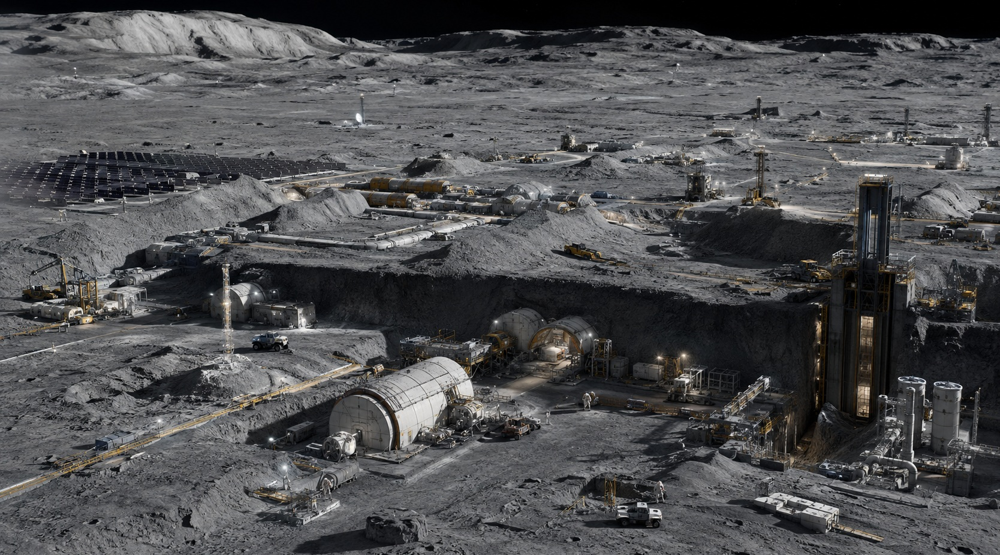

Inside Themelion
Humanity’s first permanent lunar settlement does not look like a city. Most of it is buried, unfinished and deliberately difficult to see. The Ledger spent a day walking the parts that are not.

From a distance, Themelion is easy to underestimate. There is no glass dome, no skyline and almost nothing that resembles the lunar cities imagined in the last century. What appears across the gray terrain instead is a collection of roads, antennae, solar fields, excavation cuts, equipment yards and low industrial structures separated by stretches of untouched regolith.
The first surprise comes when a freight lift rises out of the ground. The platform emerges slowly from a rectangular shaft cut into the lunar surface, carrying a pressure vessel roughly the size of a city bus. A crawler takes it from there, moving at a pace that would be unremarkable in a terrestrial construction yard if the sky above it were not black. The visible structures, it turns out, are only a small part of the base.
The way down
Our tour begins through an access structure built into the wall of a shallow excavation trench. The entrance is functional to the point of anonymity: pressure door, dust vestibule, suit connections and inspection lights. Beyond the inner hatch, a short corridor slopes gradually downward into the oldest part of the base.
These first-generation sections were landed as complete pressure modules and then covered with lunar soil for shielding. The walls retain their original curved geometry. Pipes, electrical conduits and ventilation trunks occupy much of the ceiling, and storage appears wherever someone has found room for a shelf. The oldest passageways are narrow enough that two people carrying equipment learn quickly who has right of way.
Doorways are scratched from years of cases and tool carts. Temporary cable runs have become permanent. Someone has attached a handwritten label to an air circulation panel despite the presence of a perfectly functional digital maintenance tag directly beneath it. Themelion is only a few years old, but parts of it already feel lived in.
Habitat Ring
The main inhabited section is less a ring than a network that acquired the name while engineers were still joining the first modules together. Crew quarters branch from a central spine alongside a medical room, galley, hygiene facilities, exercise space and several common areas that have accumulated furniture in ways no architect appears to have planned.
Private cabins are small. A bunk, storage, fold-down desk and screen occupy most of the available volume. Residents personalize them carefully because anything brought from Earth has mass, and mass still has a transportation cost. Photographs are common. Large objects are not.
In the galley, maintenance engineer Ben Park is repairing a coffee heater that, according to two nearby technicians, has failed often enough to qualify as a member of the crew. Park has been on the Moon for seven months and keeps a photograph of his daughter taped inside his tool case. He says the heater is not technically mission-critical, then continues working on it anyway. The joke would be ordinary in almost any workplace on Earth, and here that ordinariness is part of what makes the place feel permanent.
A town built around failure
Almost every major system at Themelion has a backup, and many of those backups are divided again. Doors separate the settlement into pressure zones. Oxygen can be isolated section by section. Water lines can be rerouted around damaged modules. Battery banks sit behind separate fire barriers, and emergency breathing equipment appears at intervals that initially seem excessive until someone points out that there is no atmosphere outside.
Engineers here use the phrase “graceful failure” often. The goal is not to prevent every component from breaking; it is to make sure one failure reduces capability instead of ending it. The same principle appears in life support, power management, data routing, water recycling and pressure control.
That approach is one reason Themelion feels different from an early orbital station. A spacecraft is built around a mission with a return. Themelion is being built around the assumption that, sooner or later, a problem will have to be solved locally rather than sent back to Earth.
Themelion at a glance
Where the base becomes a factory
The character of Themelion changes several hundred meters beyond the habitat sections. The ceilings become higher, the floors dirtier and the machinery noise harder to separate into individual sources. This is the industrial side of the settlement, and it is one of the main reasons Themelion exists where it does.
Water extracted from lunar material is valuable first because people need it, and second because it can be separated into oxygen and hydrogen. That gives the same resource roles in life support, industrial processing and, potentially, propellant production. On Earth those functions usually belong to different systems. Here they overlap.
Processing equipment is distributed rather than concentrated in one dramatic plant. Pumps and storage tanks occupy shielded service chambers. Utility corridors carry water, gases, power and data between zones. Surface structures handle equipment that can tolerate radiation and temperature extremes.
The settlement’s managers are reluctant to call any of this self-sufficiency. Too many critical components still arrive from Earth. Electronics, specialized seals, medical supplies and complex machinery remain difficult or impossible to replace locally. What has changed is the length of the list of things Themelion can make or repair for itself.
The construction level
The newest part of the base is not a landed module. It is an unfinished chamber cut directly into the lunar terrain. Temporary structural supports stand along one wall while crews prepare the space for lining, sealing and utilities, and the room is large enough that our guide’s voice acquires an echo.
Landing complete habitats worked when the base was small. The method becomes increasingly inefficient as the population and industrial footprint grow. Newer sections are being excavated locally: trenches first, then larger underground spaces where shielding is provided by the Moon itself.
The result is an unusual pattern of growth. The oldest spaces are also the smallest, while newer ones are larger because the excavation equipment that created them is larger and more capable than the machines available only a few years ago.
Surface operations
Back outside, the apparent emptiness of the surface starts to make more sense. Solar arrays occupy broad fields away from heavy vehicle traffic. Radiators stand where they can reject heat without being shadowed by nearby equipment. Communication towers sit on raised ground, while processing units that do not need full pressure protection remain exposed.
Rover tracks connect these sites in pale arcs across the regolith. The largest vehicles are crawlers built less like cars than mobile construction platforms. They transport pressure modules, excavation equipment and cargo that would be awkward to move through the underground network. They are slow, wide and designed almost entirely around utility.
The distance to Earth
Themelion’s operations room maintains several clocks. One shows local mission time. Another tracks communications windows and vehicle schedules. Earth time appears almost as an administrative requirement, useful for coordinating with people who still organize their days around sunrise and sunset.
Near the lunar south pole, the geometry of light dominates planning. Some elevated areas receive long periods of illumination useful for solar power, while nearby depressions can remain in shadow for extraordinary lengths of time. The combination of accessible energy near the surface and water-bearing material in colder terrain is one of the main reasons this region matters.
It also gives Themelion a landscape unlike the Apollo photographs familiar to generations of schoolchildren. Light arrives low across the horizon, stretching machinery, antennae and people into long shadows.
Not a colony. Not yet.
Avelor officials are careful with the word colony. They prefer settlement, industrial complex or base, partly because Themelion still depends heavily on Earth and partly because each term carries political implications that extend beyond engineering.
The people living here are less interested in the vocabulary. They sleep here, work here, argue here and celebrate birthdays here. They know which shower has the best water pressure, complain about the food rotation and learn which corridor is faster when a cargo transfer blocks the main spine. Permanence, at least at this stage, looks less like a declaration than a growing collection of routines.
What comes next
The construction maps shown to the Ledger contain more empty outlines than finished rooms. Additional industrial chambers are planned beneath the existing surface network. Excavation corridors extend toward future processing zones. Power capacity is being increased, and more cargo-handling infrastructure is being installed than the present population requires.
Managers offer a practical explanation: building on the Moon is slow enough that waiting for demand to arrive means starting too late. The current settlement remains modest, but much of the infrastructure around it is being sized for a larger one.
Near the end of our visit, another cargo elevator rises from below carrying empty racks toward the surface. A crawler waits beside the shaft. Farther away, excavation lights mark a trench that does not appear on several older photographs of the site.
From orbit, Themelion can still look like a handful of equipment scattered across a gray plain. On the ground, it is easier to see what has changed. Humanity has not built a lunar city, but it has begun building the systems that could allow one to grow.
Start Here
Inside Themelion
A walk through humanity’s first permanent lunar settlement and the infrastructure beginning to take shape beneath the surface.
Adrian Serrin: “I’ve Never Been Very Interested in Being the Smartest Person in the Room”
The Avelor founder on engineering, failure, control, Themelion, uncertainty and the way he thinks about preparation.
Evelyn Grant Won the Country. Now She Has to Govern It.
The coalition that elected President Evelyn Grant is broad. Governing it will require navigating Congress, the states and the limits of presidential authority.